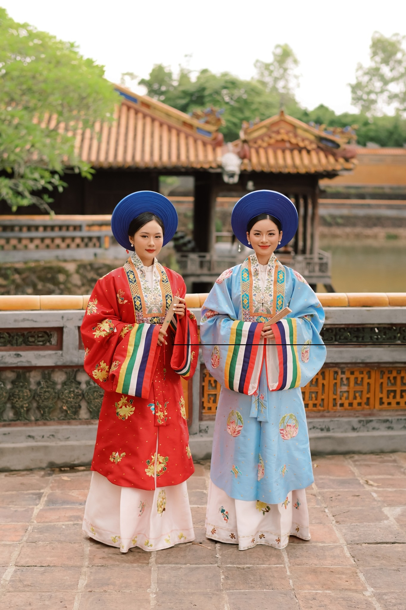

王都に生きる人々の誇り
フエの人々は、王朝の末裔としての誇りを持ちながらも、謙虚で思いやりのある性格です。祖先の文化を大切にし、今でも伝統的な礼儀作法を守っています。特に年長者を敬い、家族を尊重する価値観が強く、家庭の中では「調和と尊敬」が何より大切にされています。訪れる人々に対しても温かく丁寧に接してくれるのが印象的です。
フエの人々は、王朝の末裔としての誇りを持ちながらも、謙虚で思いやりのある性格です。祖先の文化を大切にし、今でも伝統的な礼儀作法を守っています。特に年長者を敬い、家族を尊重する価値観が強く、家庭の中では「調和と尊敬」が何より大切にされています。訪れる人々に対しても温かく丁寧に接してくれるのが印象的です。
フエは音楽と詩の町としても知られています。「ニャーニャック・クンディン（雅楽）」は世界無形文化遺産に登録されており、王朝時代の優雅な音が今も夜風に響きます。町を歩くと、古琴の音や詩の朗読が聞こえ、芸術が日常に溶け込んでいるのを感じます。
フエは古くから仏教の中心として知られ、多くの寺院が点在しています。特にティエンムー寺は町の象徴であり、静寂と荘厳さに満ちています。朝の祈りの声と線香の香りに包まれると、心が自然と落ち着きます。信仰は人々の生き方に深く根づいており、日常生活にもその精神が息づいています。
古都フエは学問の町としても有名です。歴史的に多くの学者や詩人を輩出してきました。今日でも教育熱心な家庭が多く、子どもたちに知識と礼儀を教えることが重要視されています。知的で穏やかな雰囲気は、この町全体に流れる精神文化を象徴しています。
フエでは伝統的な衣服「アオザイ」や礼儀、建築様式が今も生活の中に残っています。人々は古き良き価値観を大切にしつつ、現代の便利さも受け入れています。このバランスの取れた暮らし方が、フエ独特の優美さを生み出しているのです。